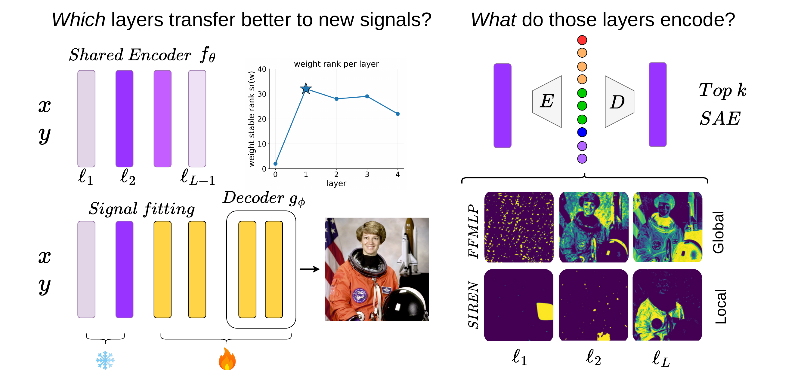
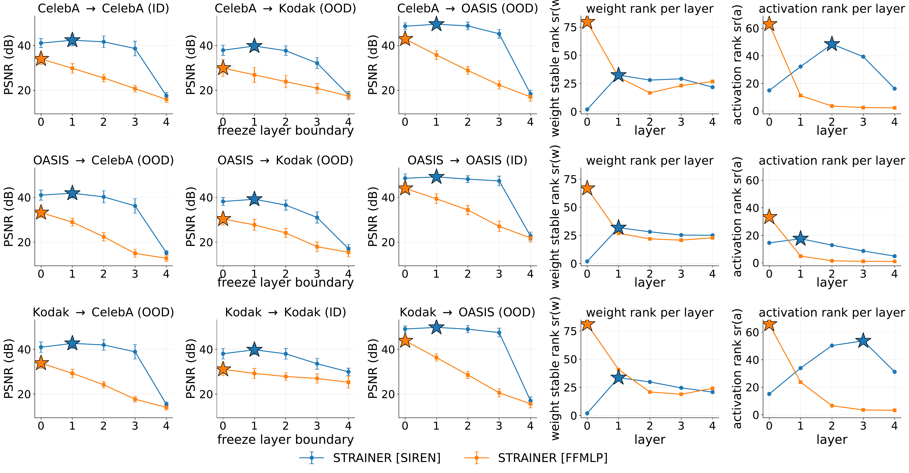
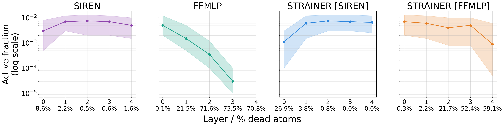
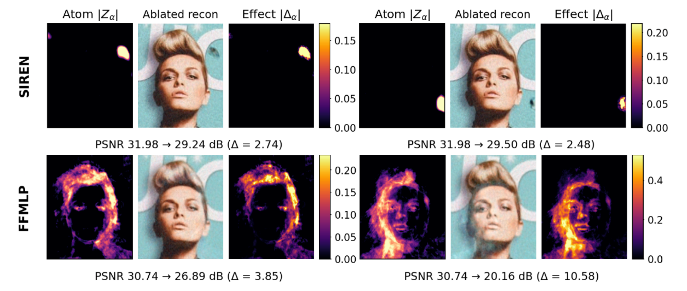

Left: the optimal freeze depth in cohort-trained INRs coincides with the layer of peak weight stable rank in the encoder. Right: SAEs recover qualitatively different dictionaries. SIREN atoms tile the coordinate plane. FFMLP atoms trace memorized cohort content.
Abstract
Reusing the early layers of cohort-trained INRs as initialization for new signals has been shown to accelerate and improve signal fitting, yet it remains unclear which layers of the shared encoder learn transferable representations and what those representations encode. We address both questions for two standard backbones, SIREN and Fourier-feature MLPs (FFMLP). First, sweeping the freeze depth across the shared encoder at test time, we find that the optimum coincides with the layer of highest weight stable rank. Moreover, freezing at this depth matches or improves on the standard fine-tuning recipe across all our experiments. Second, identifying which layer transfers does not characterize what that layer encodes. To address this we adopt sparse autoencoders (SAEs), the dominant tool in mechanistic interpretability, and present the first SAE decomposition of INR activations into sparse dictionary atoms. Interestingly, SIREN and FFMLP achieve comparable cohort-fitting quality, but learn qualitatively different dictionaries. Cohort SIREN's atoms are localized, tiling the coordinate plane such that each atom fires in a confined region independent of cohort content. Cohort FFMLP's atoms are image-spanning, tracing the contours of memorized cohort signals. Single-atom ablations confirm causal use of these dictionaries: a single FFMLP atom out of 4096 can drop PSNR by up to 10.6 dB across the image, while SIREN ablations remain confined to where the atom fires. Together, these results give the first mechanistic account of what transfers in cohort-trained INRs and turn their activations into inspectable dictionary atoms. These tools open a path towards characterizing what INRs encode and towards architectures designed for generalization rather than memorization.
Transferable features live at the rank-rich layers.
Cohort SIREN transfers best at layer 1, FFMLP at layer 0.
The optimal test-time freeze depth in cohort-trained INRs coincides with the layer of peak weight stable rank in the encoder, a predictor inferable from the encoder alone that matches or improves on the standard fine-tuning recipe.

Layer-wise transfer sweep for cohort-trained SIREN and FFMLP. The layer of peak weight stable rank picks the optimal freeze depth in all six (source, architecture) cells. Top row: SIREN. Bottom row: FFMLP. Stars mark the empirical optimum.
What the networks encode: localized atoms in SIREN,
image-shaped atoms in FFMLP.

SAE decomposition of single signal vs. cohort-trained INRs per architecture. SAE atom dictionaries split by architecture, not training regime. SIREN learns content-independent localized atoms that tile the coordinate plane. FFMLP learns image-shaped atoms tracing memorized cohort content. With purple we indicate the average top-k atoms in each dictionary. The GT image on the left column is presented for reference.

Active fraction: fraction of pixels at which the atom fires above threshold; lower values indicate spatially localized atoms. Two dictionaries, two regimes. Cohort SIREN: every atom stays alive, each firing on \(\sim 1\%\) of pixels. Cohort FFMLP: over half its atoms die at depth, survivors firing on \(30\)-\(50\%\) of pixels each.
SIREN effects stay local, FFMLP effects spread globally.

Single atom ablations per architecture. A single FFMLP atom out of 4096 drops PSNR by up to 10.58 dB across the entire image. SIREN ablations affect only where the atom fires.
BibTeX
@misc{siderilampretsa2026cohortinrs,
title={What Cohort INRs Encode and Where to Freeze Them},
author={Vasiliki Sideri-Lampretsa and Sophie Starck and Robbie Holland and Julian McGinnis and Daniel Rueckert},
year={2026},
eprint={2605.08298},
archivePrefix={arXiv},
primaryClass={cs.LG},
url={https://arxiv.org/abs/2605.08298}
}